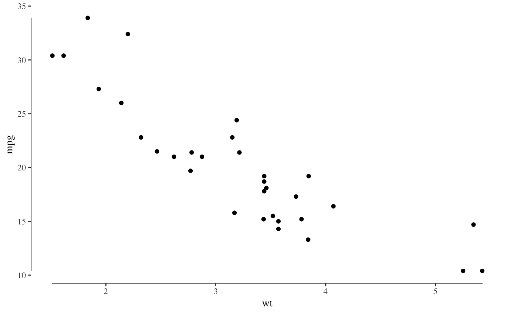

Axis lines which extend to the maximum and minimum of the plotted data.
geom_rangeframe(mapping = NULL, data = NULL, stat = "identity",
position = "identity", ..., sides = "bl", na.rm = FALSE,
show.legend = NA, inherit.aes = TRUE)
Arguments
| mapping |
Set of aesthetic mappings created by aes or
aes_. If specified and inherit.aes = TRUE (the
default), it is combined with the default mapping at the top level of the
plot. You must supply mapping if there is no plot mapping. |
| data |
The data to be displayed in this layer. There are three
options:
If NULL, the default, the data is inherited from the plot
data as specified in the call to ggplot.
A data.frame, or other object, will override the plot
data. All objects will be fortified to produce a data frame. See
fortify for which variables will be created.
A function will be called with a single argument,
the plot data. The return value must be a data.frame., and
will be used as the layer data. |
| stat |
The statistical transformation to use on the data for this
layer, as a string. |
| position |
Position adjustment, either as a string, or the result of
a call to a position adjustment function. |
| ... |
other arguments passed on to layer. These are
often aesthetics, used to set an aesthetic to a fixed value, like
color = "red" or size = 3. They may also be parameters
to the paired geom/stat. |
| sides |
A string that controls which sides of the plot the frames appear on.
It can be set to a string containing any of 'trbl', for top, right,
bottom, and left. |
| na.rm |
If FALSE, the default, missing values are removed with
a warning. If TRUE, missing values are silently removed. |
| show.legend |
logical. Should this layer be included in the legends?
NA, the default, includes if any aesthetics are mapped.
FALSE never includes, and TRUE always includes. |
| inherit.aes |
If FALSE, overrides the default aesthetics,
rather than combining with them. This is most useful for helper functions
that define both data and aesthetics and shouldn't inherit behaviour from
the default plot specification, e.g. borders. |
Aesthetics
colour
size
linetype
alpha
References
Tufte, Edward R. (2001) The Visual Display of
Quantitative Information, Chapter 6.
See also
Examples
